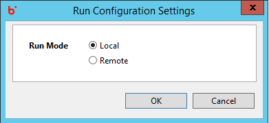

Hydrograph Help
Hydrograph Help
How to Run a Job on Locally
Hydrograph Release Version 1.0
To Run a job Locally, make sure that you have a working job.
Click on Run button or press Ctr+R, it opens a grid requesting user to either seelct Local or Remote Run. Select Local Run option

Click on Ok. Provide parameter values if any in the parameter grid and click OK.

Watch Job Run log in the console and wait for the build to complete successfully.